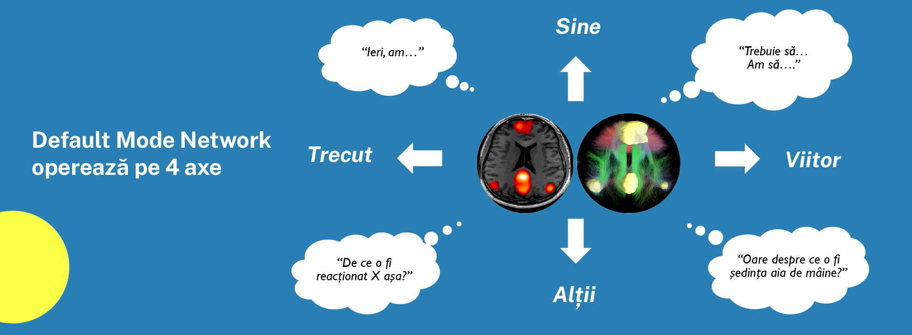
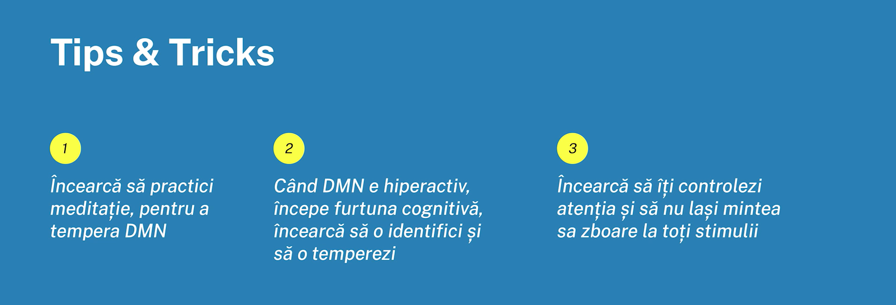
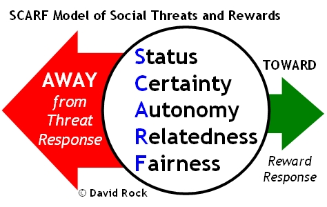
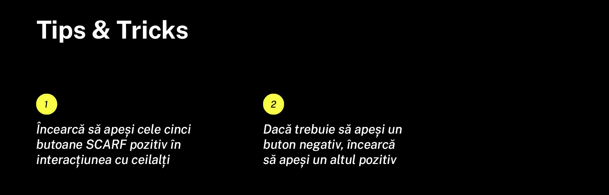

DEFAULT MODE NETWORK
Default Mode Network desemnează o rețea neuronală care se activează în momentul în care nu ne focalizăm
conștient atenția pe un task.

Trăsături specifice
- rețeaua intră în funcțiune de la vârsta de 4-5 ani
- are tendința de focalizare pe ego
- anticipează probleme viitoare la care încearcă să găsească soluții
- meditația ajută la diminuarea activității acestei rețele
- este consumatoare de foartă multă energie

Modelul SCARF
Conceptul celor 5 butoane universale este introdus de către David Rock în cartea sa "Creierul tău la muncă",
iar acestea sunt specifice tuturor oamenilor indiferent de cultură, naționalitate, religie și vârstă.

Semnificație
- S - despre a te simți validat și apreciat
- C - despre a avea certitudini, predictibilitate
- A - despre controlul asupra propriei vieți
- R - despre elemente familiare
- F - despre percepția de corectitudine în interacțiunile cu cei din jur
